About
I am a Computer Vision researcher pursuing my Ph.D. at the University of Macau. My research encompasses generative models, diffusion models, arbitrary style transfer, semantic segmentation, and manipulation detection.
I have proposed and executed novel solutions for multiple computer vision problems, with my work recognized in conferences such as CVPR, ICCV, NeurIPS, ICLR, and AAAI. Beyond academia, I have industry experience from internships at Amazon AWS and Amazon Alexa, shipping state-of-the-art visual feature models.
Timeline
Ph.D. in Computer Sciences
University of Macau
Studying conditional layout-to-image generation and granular edge detection problems.
Applied Scientist Intern
Amazon AWS (Shanghai)
Engineered a video-to-video transfer model utilizing diffusion for user-guided video editing (published in ICLR 2024) and developed efficient diffusion models for layout-to-image synthesis.
Applied Scientist Intern
Amazon Alexa
Pioneered one-shot style transfer platforms, halving deployment times. Conducted vital research bridging computer vision algorithms with Amazon's Alexa platform (published in AAAI 2023, CVPR 2021 Oral).
Master/Ph.D. in Computer Sciences
University of Southern California
Innovated generalized zero-shot semantic segmentation and deep fake detection mechanisms, solving diverse CV tasks mapping to key conferences (ICCV, CVPR).
B.S. in Information Security
Shanghai Jiao Tong University
Recipient of Third-Class Scholarship for three consecutive years.
Selected Publications
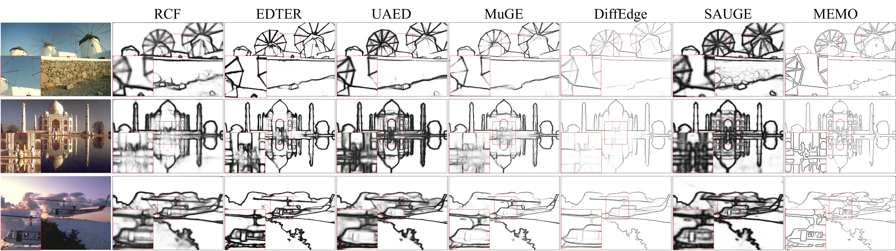
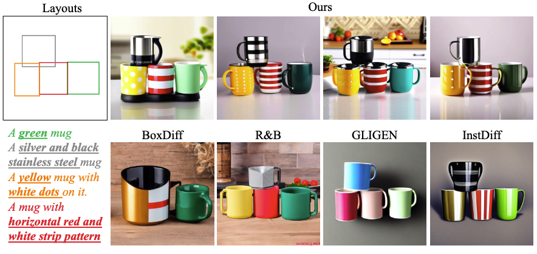
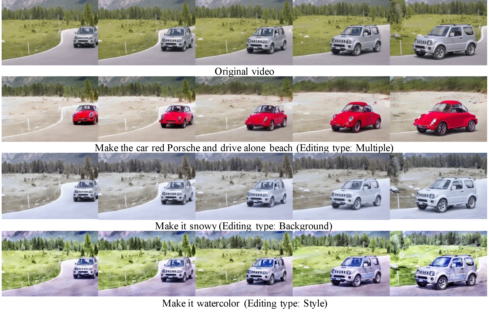
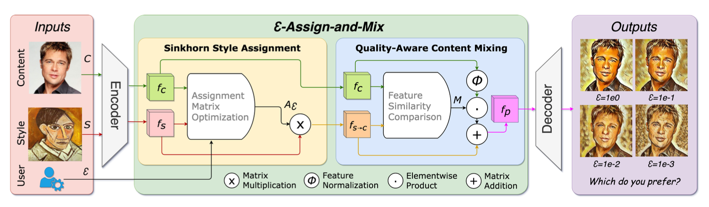
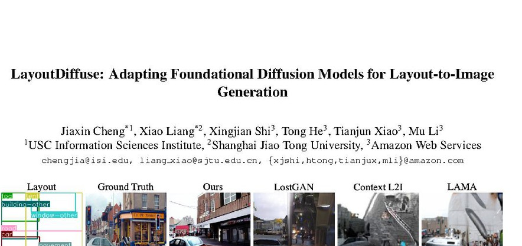
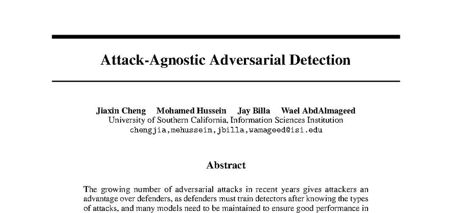
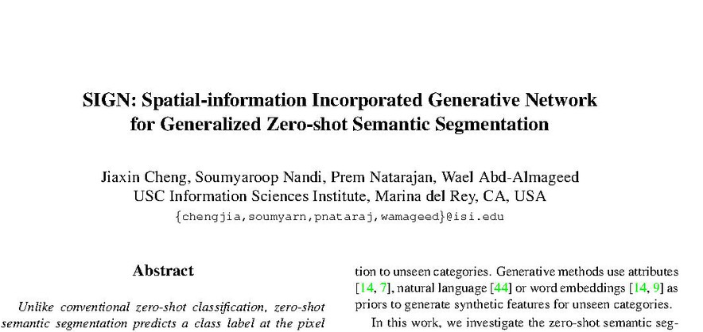
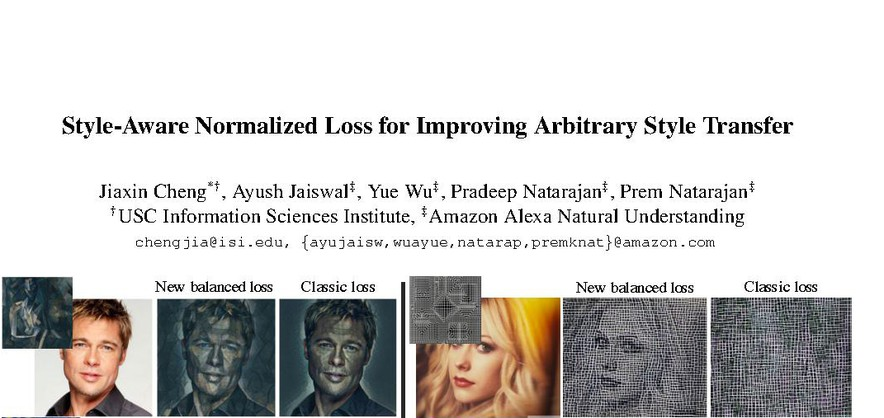
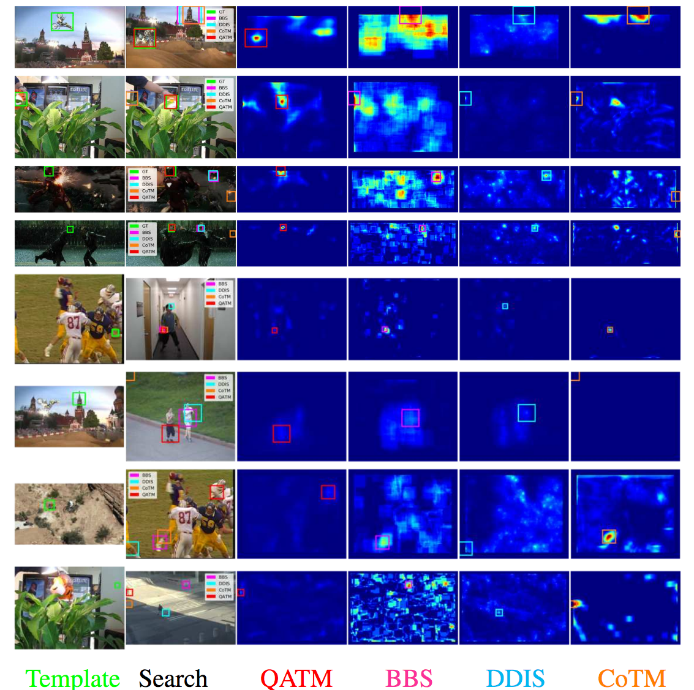
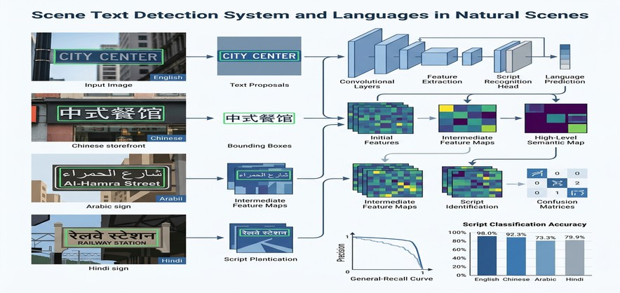
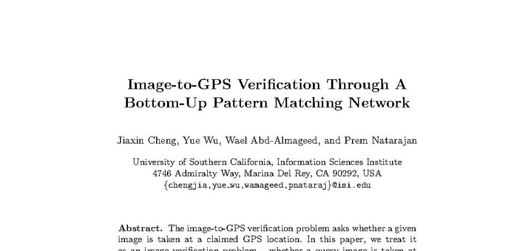
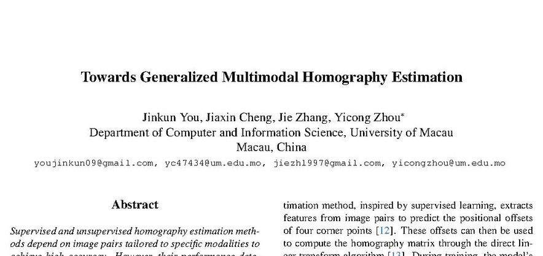
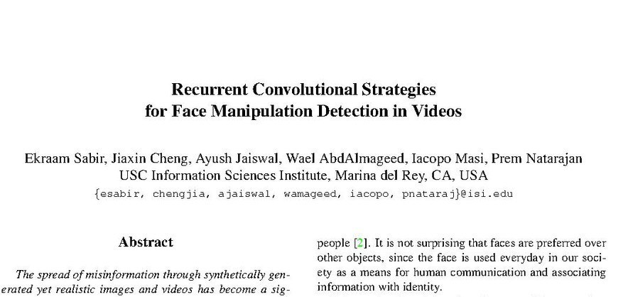
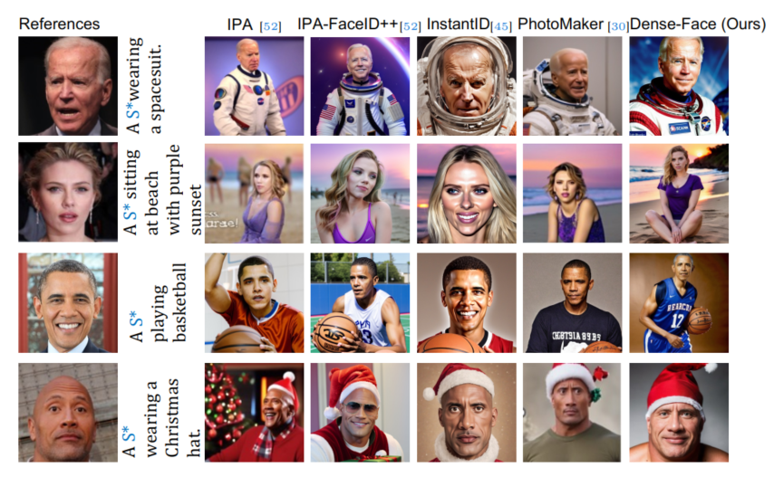